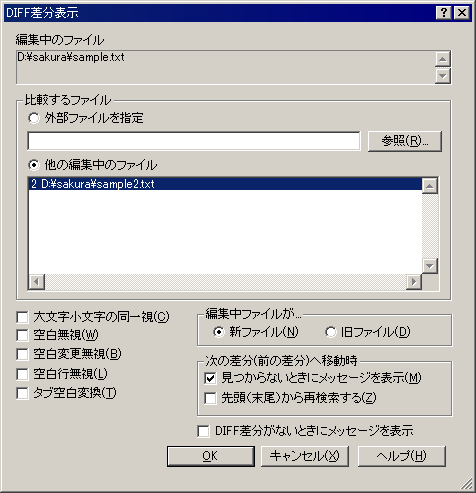

DIFF差分表示
DIFFによる行単位の差分表示を行います。

DIFF差分表示を利用するには、diff.exe が必要です。
diff.exe はパッケージに含まれません。別途ソフトウェア配布サイト等からダウンロードしてください。
 注意
注意
GNU DIFF 2.5/2.7が必要です．WinCVS 1.2付属のdiffはパス中のスペースを正しく扱えないので使わないでください．
入手先:http://w32tex.org/index-ja.html
「W32 utilities」のページから、patch-diff-w32.zip をダウンロードします。
差分表示を行うと行番号の左側に差分状態が表示されます。
差分状態の意味は以下のとおりです。
・「＋」 追加 その行が編集中ファイルに存在しますが、相手ファイルには存在しません。
・「！」 変更 その行が編集中ファイルと相手ファイルで異なります。その行の前後が含まれる場合もあります。
・「↑」 削除 その行と前の行の間に相手ファイルには存在しますが、編集中ファイルに存在しない行があります。
・「↓」 削除 その行の次に相手ファイルには存在しますが、編集中ファイルに存在しない行があります。EOF以降となります。
差分表示の行番号の色はタイプ別設定 『カラー』プロパティで設定できます。
 ヒント
ヒント
diff.exe は サクラエディタ本体と同じフォルダに置く必要があります。
diff.exeは、GNU diff 2.5/2.7 互換で、DOS版でない(=WinCUI版)必要があります。
スペースを含むパスを扱えない物もありますので、注意してください。
■マクロ構文
・構文: DiffDialog( );
・記録: ×
・構文: Diff( str1 :String, int2 :Integer );
str1 ファイル名
int2 オプション
・記録: ×
・解説
オプションには以下の値の組み合わせを指定できます。
0x01 大文字小文字同一視
0x02 空白無視
0x04 空白変更無視
0x08 空行無視
0x10 TAB-SPACE変換
0x20 編集中のファイルが旧ファイル
0x40 DIFF差分がないときにメッセージ表示
0x80 - No Use -